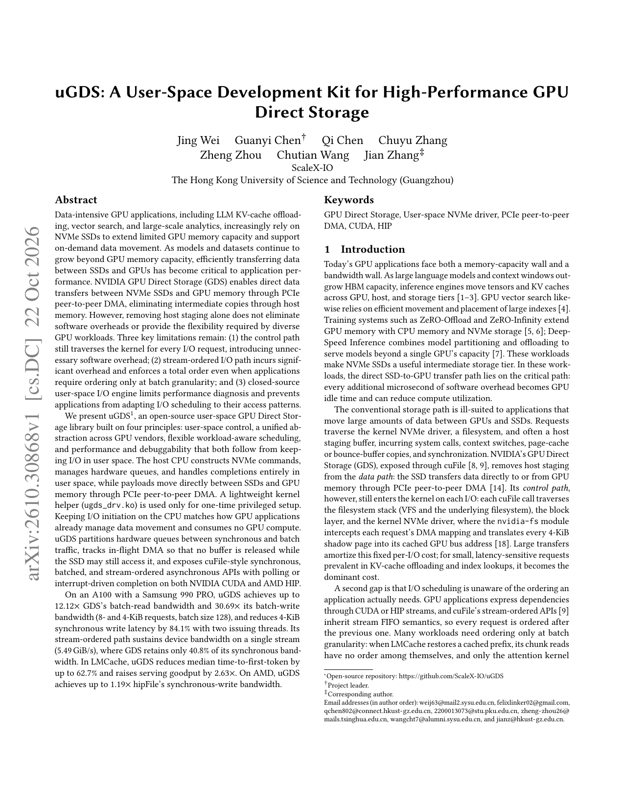
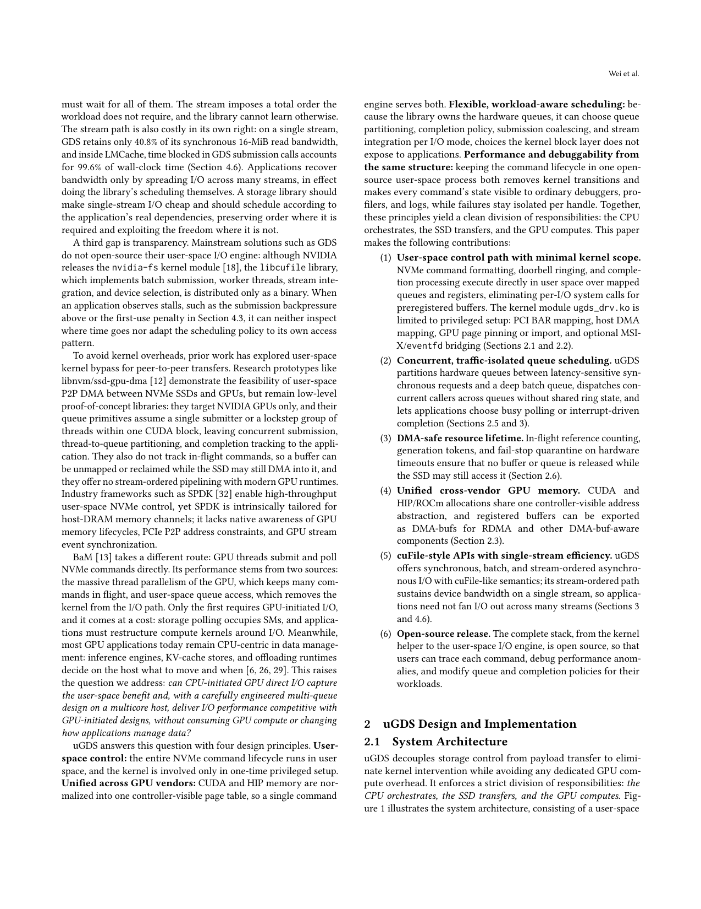
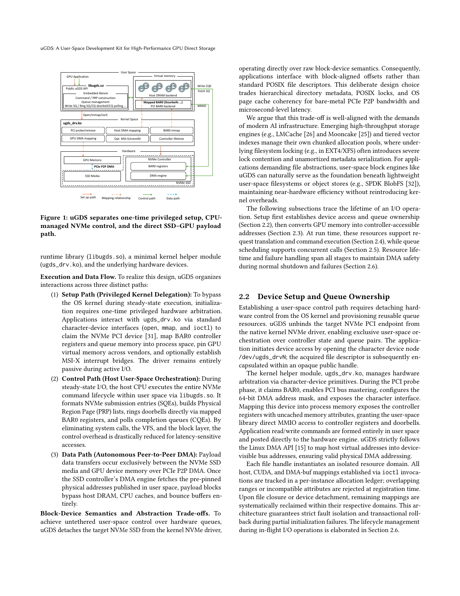

uGDS: A User-Space Development Kit for High-Performance GPU Direct Storage
NVIDIA GDS 让 NVMe 经 PCIe P2P 直达 GPU，但仍有三条硬伤：控制面每次 I/O 穿内核、stream 路径强全序、用户态引擎闭源难诊。uGDS 做成用户态开发套件；在 Samsung 990 PRO 上批量读带宽最高达 GDS 的 12.12×、写 30.69×，两线程下 4-KiB 同步写延迟降 84.1%。GDS 单 stream 只保住同步 16-MiB 读带宽的 40.8%，提交调用可占墙钟 99.6%。GPU Direct Storage 的瓶颈常在控制面与排序语义，而不只在 DMA 带宽。
NVIDIA GDS 让 NVMe 经 PCIe P2P 直达 GPU，但仍有三条硬伤：控制面每次 I/O 穿内核、stream 路径强全序、用户态引擎闭源难诊。uGDS 做成用户态开发套件（libugds + 最小内核辅助）。Samsung 990 PRO 上批量读带宽最高达 GDS 的 12.12×、写 30.69×；两线程下 4-KiB 同步写延迟 −84.1%。单 stream 上 GDS 只保住同步 16-MiB 读带宽的 40.8%，提交调用可占墙钟 99.6%。接入 LMCache 后 TTFT 中位数最高 −62.7%，serving goodput 2.63×。GPU Direct Storage 的瓶颈常在控制面与排序语义，而不只在 DMA 带宽。
1. 问题
KV cache offload 等小 I/O 对固定每请求内核开销极敏感；GDS stream API 的全序在只需批级序时过强；闭源引擎阻碍定制调度。

2. 方法
三路径：Setup 用特权内核委托建好队列后稳态绕开 OS；Control 在用户态发 NVMe；Data 走自主 P2P DMA。硬件队列拆成延迟敏感同步请求与深批队列。提供可诊断的用户态调度钩子。

3. 核心贡献
把 GDS 的控制面搬出内核热路径，并把排序语义从「全序 stream」降到批级需求。省的是提交开销与错误排序，不是再抠 PCIe 峰值。
4. 实验
| 指标 | uGDS vs GDS |
|---|---|
| 批读带宽 | 最高 12.12× |
| 批写带宽 | 最高 30.69× |
| 4-KiB 同步写延迟（2 线程） | −84.1% |
| 单 stream 相对同步带宽 | GDS 仅保留 40.8% |
| LMCache TTFT 中位 | 最高 −62.7% |
| LMCache goodput | 2.63× |
| AMD vs hipFile 同步写 | 最高 1.19× |

示意走查：LMCache 把 KV 块写入 SSD。GDS 路径上每次 4-KiB 写都进内核提交，墙钟几乎耗在提交而非 DMA；换成 uGDS 后同步写走用户态队列，TTFT 中位数下降。批读场景下把请求聚到深批队列，带宽接近器件上限。
作者对比还覆盖 AMD hipFile：同一套用户态思路在非 NVIDIA 栈上仍有同步写带宽收益（最高约 1.19×），说明问题不单是某一家闭源引擎，而是「控制面是否在热路径」。对诊断，开源用户态让人能看清队列深度与顺序，而不是只拿到一个黑盒带宽数字。
5. 局限
依赖特定 NVMe/GPU/PCIe 拓扑；用户态轮询占 SM 的权衡需按负载调；安全模型与多租户隔离要额外工程。
6. 实践意义
KV offload / 训练 ZeRO-offload 路径可优先测 uGDS 类用户态直存；先看小 I/O 延迟与提交占比，再谈带宽。